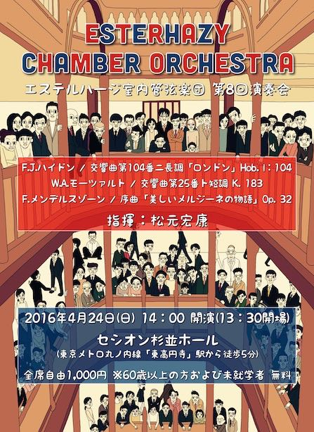
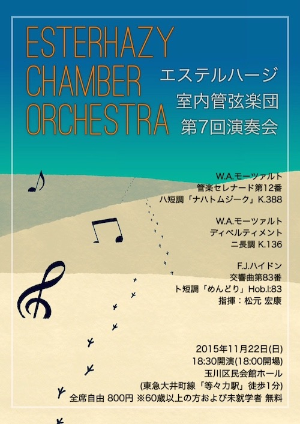
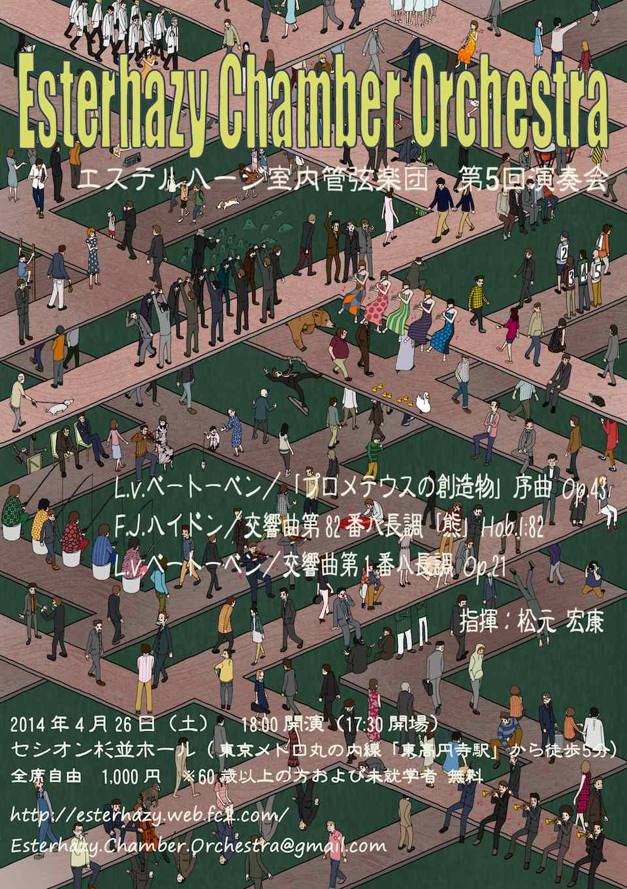

次回演奏会(第１０回演奏会)
日時：2017年5月7日(日) 14:00開演(13:30開場)
場所：セシオン杉並ホール
F.J.ハイドン／交響曲第88番 ト長調「Ｖ字」Hob.I:88
L.v.ベートーヴェン／交響曲第3番 変ホ長調「英雄」 Op.55
指揮：松元 宏康
場所：セシオン杉並ホール
F.J.ハイドン／交響曲第88番 ト長調「Ｖ字」Hob.I:88
L.v.ベートーヴェン／交響曲第3番 変ホ長調「英雄」 Op.55
指揮：松元 宏康
過去の演奏会
第９回演奏会
日時：2017年5月7日(日) 14:00開演(13:30開場)
場所：セシオン杉並ホール
F.J.ハイドン／交響曲第94番 ト長調「驚愕」Hob.I:94
W.A.モーツァルト／交響曲第39番 変ホ長調 K.543
G.A.ロッシーニ／「絹のはしご」序曲
指揮：松元 宏康
第８回演奏会
日時：2016年4月24日(日) 14:00開演(13:30開場)
場所：セシオン杉並ホール
F.J.ハイドン／交響曲第104番 ニ長調「ロンドン」Hol.I:104
W.A.モーツァルト／交響曲第25番 ト短調 K.183
F.メンデルスゾーン／序曲「美しいメルジーネの物語」Op.32
指揮：松元 宏康
第７回演奏会
日時：2015年11月22日(日) 18:30開演(18:00開場)
場所：玉川区民会館 ホール (東急大井町線「等々力駅」徒歩1分)
W.A.モーツァルト／管楽セレナード第12番 ハ短調「ナハトムジーク」 K.388
指揮：藤原 真
W.A.モーツァルト／ディベルティメント ニ長調 K.136
F.J.ハイドン／交響曲第83番 ト短調「めんどり」Hob.I:83
※アンコール: F.J.ハイドン／交響曲第85番 変ロ長調「王妃」より第3楽章
指揮：松元 宏康
第６回演奏会
日時：2015年4月29日(水・祝) 13:30開演(13:00開場)
場所：セシオン杉並ホール
G.A.ロッシーニ／「セビリアの理髪師」序曲
W.A.モーツァルト／交響曲第38番ニ長調「プラハ」K.504
L.v.ベートーベン／交響曲第2番ニ長調 Op.36
※アンコール: F.J.ハイドン／歌劇「月の世界」序曲
指揮：松元 宏康
第５回演奏会
日時：2014年4月26日(土) 18:00開演(17:30開場)
場所：セシオン杉並ホール
L.v.ベートーベン／「プロメテウスの創造物」序曲 Op.43
F.J.ハイドン／交響曲第82番ハ長調「熊」Hob.I:82
L.v.ベートーベン／交響曲第1番ハ長調 Op.21
※アンコール: W.A.モーツァルト／歌劇「フィガロの結婚」序曲 K.492
指揮：松元 宏康
第４回演奏会

日時：2013年4月27日(土) 18:00開演(17:30開場)
場所：セシオン杉並ホール
F.J.ハイドン／歌劇「月の世界」序曲
W.A.モーツァルト／交響曲第40番ト短調 K.550
W.A.モーツァルト／交響曲第41番ハ長調「ジュピター」 K.551
※アンコール: W.A.モーツァルト／交響曲第1番変ホ長調 K.16 より2楽章
指揮：松元 宏康
第３回演奏会

日時：2012年6月30日(土) 18:00開演(17:30開場)
場所：稲城市立iプラザ
W.A.モーツァルト／歌劇「後宮からの逃走」序曲 K.384
W.A.モーツァルト／交響曲第31番ニ長調「パリ」 K.297
F.J.ハイドン／交響曲第100番ト長調「軍隊」 Hob.I:100
※アンコール: W.A.モーツァルト／交響曲第31番二長調「パリ」 K.297 より2楽章(初稿)
指揮：松元 宏康
第２回演奏会

日時：2010年12年23日(木・祝) 14:00開演(13:30開場)
場所：玉川区民会館(東急大井町線「等々力駅」徒歩1分)
W.A.モーツァルト／セレナーデ第11番変ホ長調 K.375
W.A.モーツァルト／セレナーデ第13番ト長調 k.525 「アイネ・クライネ・ナハトムジーク」
W.A.モーツァルト／交響曲第29番イ長調 K.201
※アンコール: W.A.モーツァルト／「アヴェ・ヴェルム・コルプス」ニ長調 K.618
指揮：松元 宏康
第１回演奏会
日時：2010年5年4日(火・祝) 14:00開演(13:30開場)場所：杜のホールはしもと
W.A.モーツァルト／歌劇「フィガロの結婚」序曲 K.492
F.J.ハイドン／交響曲第96番「奇蹟」ニ長調 Hob.I:96
W.A.モーツァルト／交響曲第35番「ハフナー」ニ長調 K.385
※アンコール：W.A.モーツァルト／歌劇「フィガロの結婚」序曲 K.492
指揮：松元 宏康